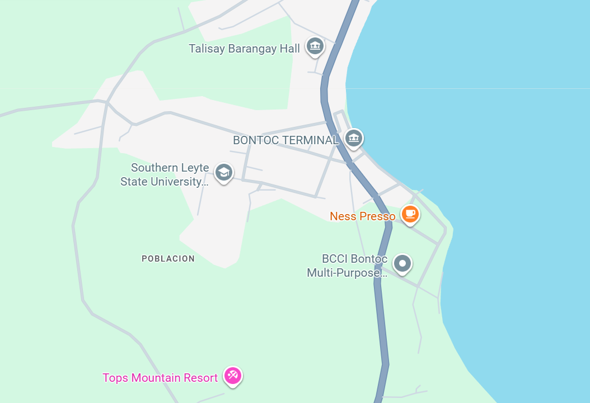

Click on location to learn more:
Bontoc is a picturesque town in the province of Southern Leyte, Philippines. It's known for its natural beauty, friendly locals, and rich culture. The town lies between the mountains and the sea, offering both serenity and adventure.
Jump to Tourism Section